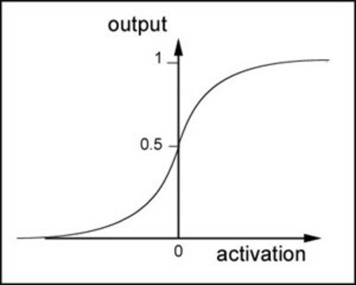

神经网络基础与人工神经网络
神经网络方面的研究很早就已出现，今天“神经网络”已是一个相当大的、多学科交叉的学科领域。神经网络中最基本的成分是神经元模型。

上图中每个圆圈都是一个神经元，每条线表示神经元之间的连接。我们可以看到，上面的神经元被分成了多层，层与层之间的神经元有连接，而层内之间的神经元没有连接。
感知器
为了理解神经网络，我们应该先理解神经网络的组成单元——神经元。神经元也叫做感知器。还记得之前的线性回归模型中权重的作用吗？每一个输入值与对应权重的乘积之和得到的数据或通过激活函数来进行判别。下面我们看一下感知器：

可以看到，一个感知器有如下组成部分：
- 输入权值，一个感知器可以有多个输入,每个输入上有一个权值
- 激活函数，感知器的激活函数有许多选择，以前用的是阶跃函数，,其中为权重数据积之和
- 输出，
我们了解过sigmoid函数是这样,在之前的线性回归中它对于 二类分类 问题非常擅长。所以在后续的多分类问题中，我们会用到其它的激活函数

神经网络
那么我们继续往后看，神经网络是啥？

神经网络其实就是按照一定规则连接起来的多个神经元。
- 输入向量的维度和输入层神经元个数相同
- 第N层的神经元与第N-1层的所有神经元连接，也叫 全连接
- 上图网络中最左边的层叫做输入层，负责接收输入数据；最右边的层叫输出层，可以有多个输出层。我们可以从这层获取神经网络输出数据。输入层和输出层之间的层叫做隐藏层，因为它们对于外部来说是不可见的。
- 而且同一层的神经元之间没有连接
- 并且每个连接都有一个权值，
那么我们以下面的例子来看一看，图上已经标注了各种输入、权重信息。

对于每一个样本来说，我们可以得到输入值,也就是节点1，2，3的输入值，那么对于隐层每一个神经元来说都对应有一个偏置项，它和权重一起才是一个完整的线性组合
这样得出隐层的输出，也就是输出层的输入值.
矩阵表示

同样，对于输出层来说我们已经得到了隐层的值，可以通过同样的操作得到输出层的值。那么重要的一点是，分类问题的类别个数决定了你的输出层的神经元个数
神经网络的训练
我们可以说神经网络是一个模型，那么这些权值就是模型的参数，也就是模型要学习的东西。然而，一个神经网络的连接方式、网络的层数、每层的节点数这些参数，则不是学习出来的，而是人为事先设置的。对于这些人为设置的参数，我们称之为超参数。
前向传播
神经网络的训练类似于之前线性回归中的训练优化过程。前面我们已经提到过梯度下降的意义，我们可以分为这么几步：
计算结果误差
通过梯度下降找到误差最小
更新权重以及偏置项
这样我们可以得出每一个参数在进行一次计算结果之后，通过特定的数学理论优化误差后会得出一个变化率
反向传播
就是说通过误差最小得到新的权重等信息，然后更新整个网络参数。通常我们会指定学习的速率（超参数），通过 变化率和学习速率 率乘积，得出各个权重以及偏置项在一次训练之后变化多少，以提供给第二次训练使用

tensorflow神经网络接口的实现
tf.train.GradientDescentOptimizer
在使用梯度下降时候，一般需要指定学习速率
tf.train.GradientDescentOptimizer(0.5)
方法
init
构造一个新的梯度下降优化器
__init__(
learning_rate,
use_locking=False,
name='GradientDescent'
)
- learning_rate tensor或者浮点值，用于学习速率
minimize
添加操作以更新最小化loss，这种方法简单结合调用compute_gradients()和 apply_gradients()（这两个方法也是梯度下降优化器的方法）。如果要在应用它们之前处理梯度，则调用compute_gradients()和apply_gradients()显式而不是使用此函数。
minimize(
loss,
global_step=None,
var_list=None,
gate_gradients=GATE_OP,
aggregation_method=None,
colocate_gradients_with_ops=False,
name=None,
grad_loss=None
)
- loss 损失值,变量值
- global_step 变量，在每次更新之后加1